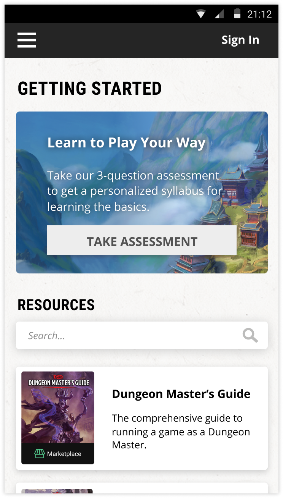
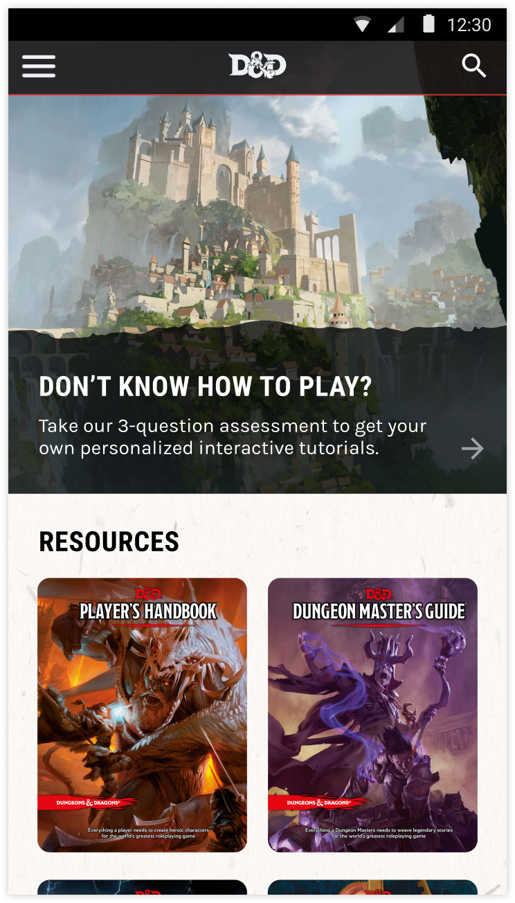
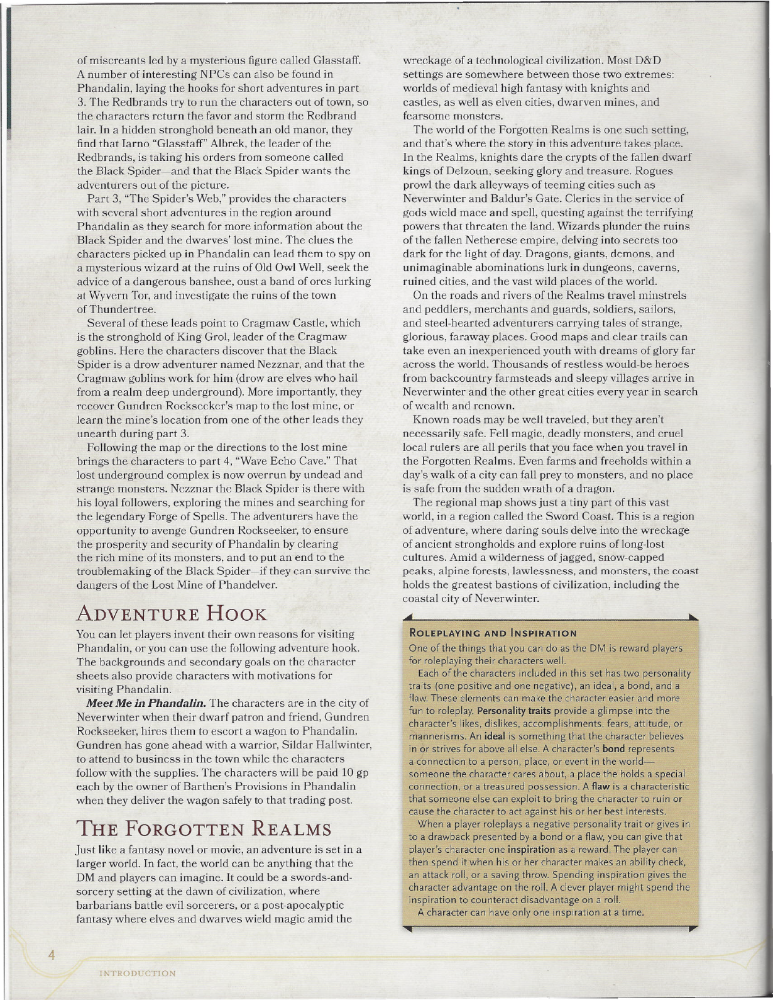
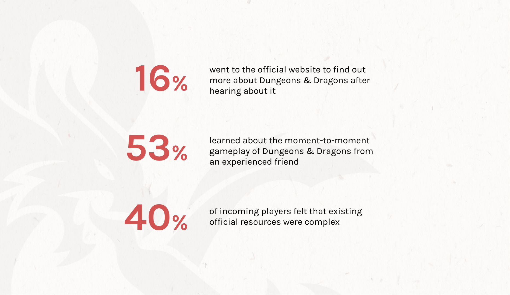
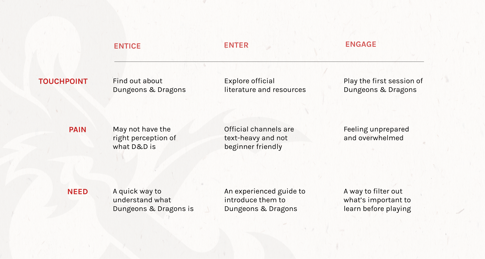
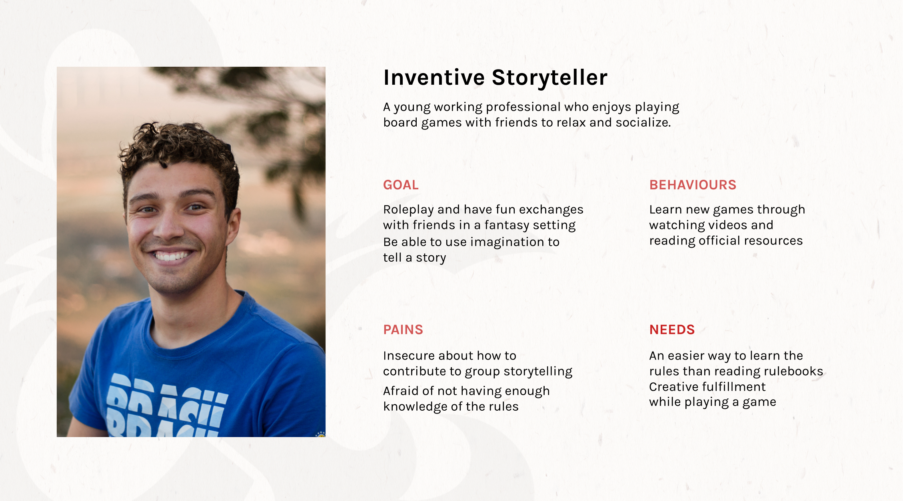

Dungeons & Dragons (D&D) is a cooperative role playing game, where players explore a collaborative narrative set in a fantasy world. The current D&D app, called D&D Beyond is a compendium containing all downloadable versions of the official manuals and resources of the game. We designed an extension to the existing D&D Beyond mobile application that teaches rules and gameplay through easily digestible and interactive lessons.
Consumers who are not engaging with official channels of D&D are less likely to exposed to new offerings. Wizards of the Coast relies on sales from updating existing materials, publishing new materials, and events. However, there is a high barrier to entry to the game due to the depth of rules and mechanics players must learn, and resources for D&D rules and mechanics on official channels, such as the website or the Starter Set handbook, are high in cognitive overhead.
A survey was posted on various online platforms, including Reddit, D&D Facebook group, Discord servers, and D&D forums. A total of 310 responses were recorded. Only a few of those directly went to the official site to learn more about D&D.
53% of 310 survey respondents learned about game play mechanics through an experienced friend rather than from existing D&D materials and resources. The brand director of D&D, Nathan Stewart, also seeks to extend D&D into a multi-channel experience that can be enjoyed beyond just a tabletop dice game. With this, we re-frames and asked ourselves:
A user profile was crafted based off of the research and data we collected over the days. From there, we crafted a brief journey framework; specifying the experiences, needs, and pain points that would happen as he finds out more about D&D. Much of the stress stemmed from the "Enter" phase, which caused majority of the pain points within the "Engage".
 Overall, the tutorial minimizes the amount of information required to become familiar with Dungeons & Dragons by delivering relevant information based on the adventurer’s interests and experience.
The current landing page for the D&D Beyond app has been redesigned to fit a section for the interactive tutorial module. A title for “Resources” has also been added to give a better context to the user what they’re seeing when they first enter the app. Elements such as the navigation bar have also been redesigned to fit the branding of the game more.